Wat is ontwerpen?
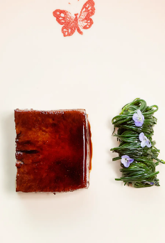
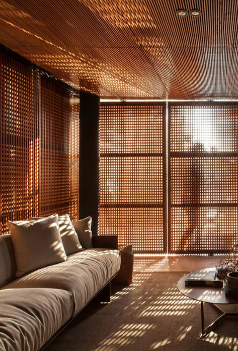
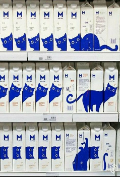
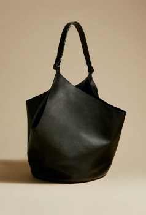
"A taste of gucci"
Interview met chef-kok Karime Lopez . van gucci osteria.
Scandinavisch interieur design
Het interieur van 2023.
Supermarkt Design
Marit Kemper laat zien dat overal design is.
De simpele tas
De minimalistische zwarte tassen zijn weer helemaal terug in de mode.
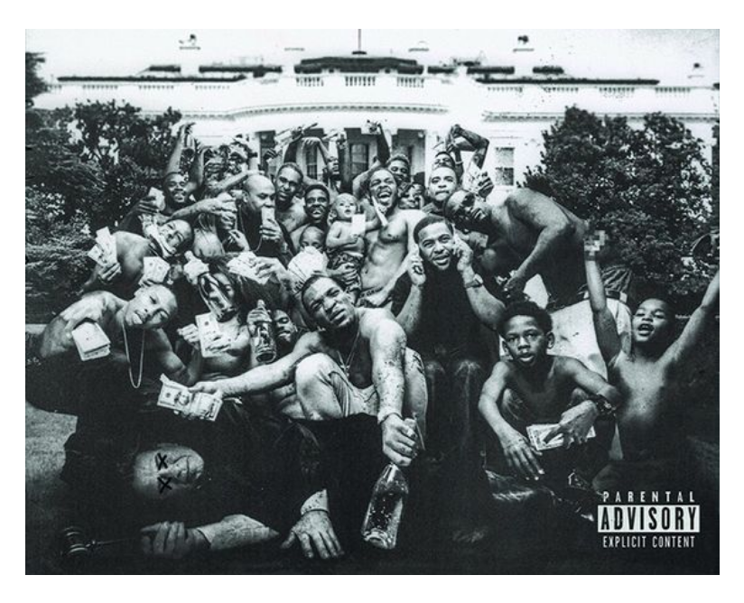
Het design van ulbum covers.
Wordt er echt nagedacht over deze covers? En hebben ze invloed op de manier waarop je naar het album luistert?
10 min. read
Picture: Kendrick Lamar - To Pimp A Butterfly
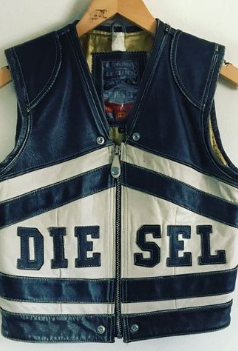
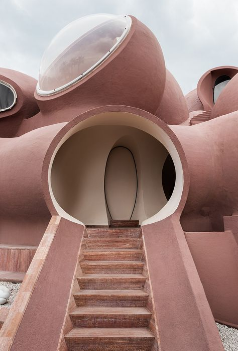
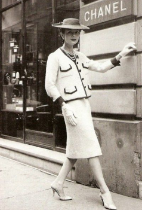
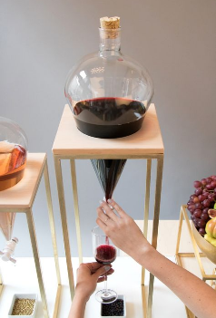
Vinted is de nieuwe rage.
Europa's grootste marktplaats voor kleding.
Modecreator Pierre Cardin's roze droompaleis
Het huis van Pierre Cardin is gelijk aan het Barbapappa en Hobbit huis.
Coco Chanel
Een van de meest invloedrijke personen van de 20e eeuw door Chanel Nº5.
Recht door de filter
Wijn in een nieuw jasje.
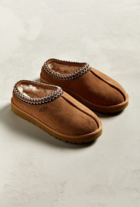
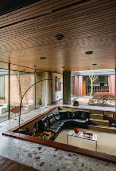
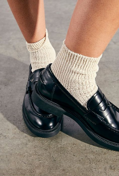
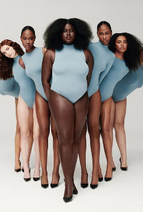